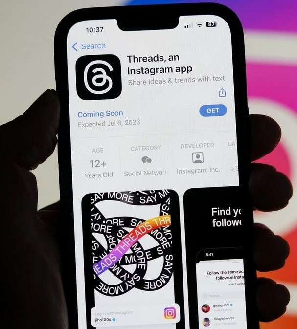
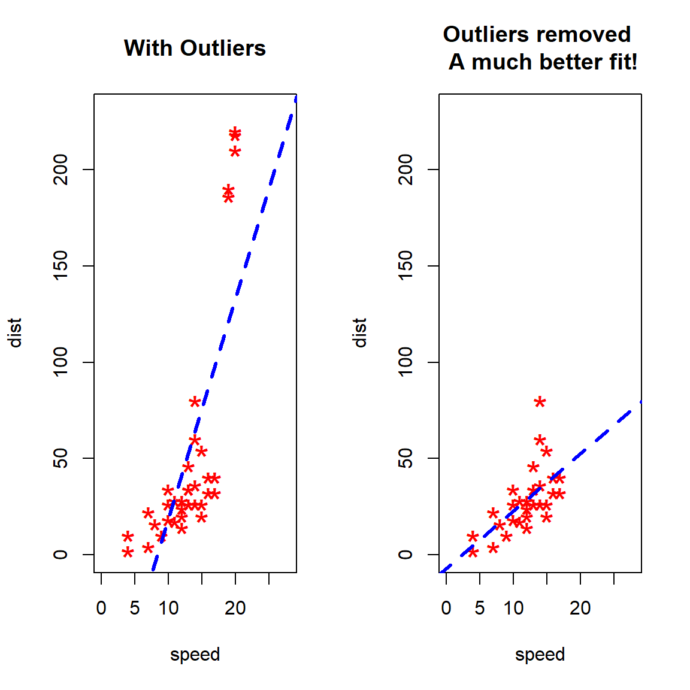
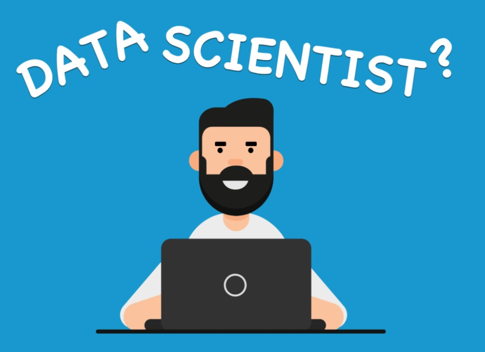

About Me
Hello, I'm Dhiraj Pant,from the charming town of Mahendranagar, Nepal. I am a dedicated Data Scientist with a passion of exploring insights hidden within the data & unraveling the stories concealed in numbers and patterns.
I'm an great believer in the power of data to drive meaningful change and innovation. As a continuous learner, I embrace each & every challenges whether big or small as opportunities to expand my knowledge and skills so I'm always open to new learning opportunities, collaborations, and challenges.
Thank you for visiting my portfolio website. I look forward to connecting with fellow data enthusiasts,IT professionals & potential collaborators.
Skills
Experience
Education
 Excel/Sheets
Excel/Sheets MySQL/SQL
MySQL/SQL Tableau
Tableau Python (NumPy, Pandas, Matplotlib, Seaborn, Scikit-learn)
Python (NumPy, Pandas, Matplotlib, Seaborn, Scikit-learn)- Machine Learning & Deep Learning
 Git & GitHub
Git & GitHub
- Data Science Intern | Oasis Infobyte
- November 2023 - Now
- • Worked with Sales dataset to identify trends, top-selling products, and revenue metrics for business decision-making.
- • Created a Machine learning model using Diabetes Patients dataset to predict whether a patient has diabetes based on certain diagnostic measurements included in the dataset
- • Effectively cleaned, performed Feature engineering & basic statistical analysis and created visualizations to extract meaningful insights from the HR analytics dataset.
- Bachelor of Engineering - BE, Computer
- Far Western University, Nepal
- 2021-Expected (2025)
- Intermediate in Science - I. Sc
- Morning Glory Higher Secondary School, Nepal
- 2018-2020
Projects
Heart Diseases Prediction
This Machine Learning model computes and predicts the patient cardiovascular health after it has obtained essential data from the human body.

EDA on Threads App Reviews
The EDA will explore the Threads app reviews and enables the understanding of user satisfaction,app performance, and identification of emerging patterns.
EDA on Netflix
This EDA will explore the Netflix dataset and enables the understanding of various contents available in Netflix, their ratings, release years and countries
My Blogs

Use and Downsides of Outliers
This Blog post explains my views on how outliers in a dataset are detrimental to data analysis as well as useful for various data analysis process
Most Valuable Commodity in 21st Century - Data
This Blog post explains my views on how the data has become the most valuable commodity while raising important ethical and privacy concerns in 21st century.

The Sexiest Job of 2021: Data Scientist
This Blog post explains my views on how the data scientist became the "sexiest job" in 21st century & rapid increase in data anad data driven decisions.